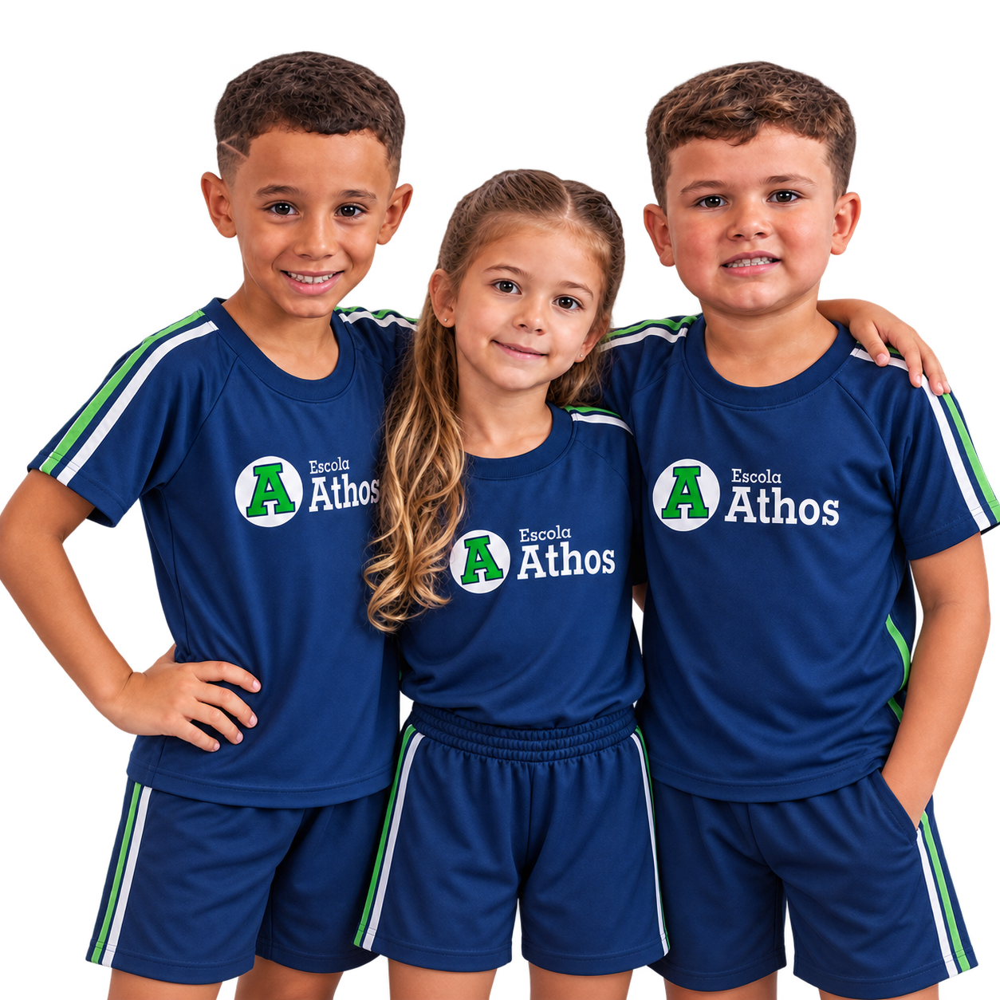

EXPRESSÃO
EXPRESSÃO
Balé
Coordenação, postura, musicalidade, disciplina e expressão corporal em uma atividade leve e formativa.
Quero saber mais →
Na Escola Athos, os projetos ampliam o aprendizado para além da sala de aula. São experiências que desenvolvem autonomia, convivência, disciplina, criatividade e habilidades que acompanham o aluno para a vida.
Atividades pensadas para desenvolver corpo, mente, convivência e confiança.
EXPRESSÃO
Coordenação, postura, musicalidade, disciplina e expressão corporal em uma atividade leve e formativa.
Quero saber mais → DISCIPLINA
DISCIPLINA
Foco, autocontrole, respeito e disciplina por meio de uma prática que fortalece corpo e mente.
Quero saber mais → ESPORTE
ESPORTE
Trabalho em equipe, agilidade, responsabilidade e espírito esportivo em uma atividade cheia de energia.
Quero saber mais →Ao longo do ano, a comunidade Athos participa de projetos, celebrações e experiências especiais que tornam a rotina escolar mais significativa.
Acompanhar no Instagram →
Alguns registros recentes da Escola Athos.
Agende uma visita e conheça nossa proposta, estrutura e projetos.